1800-talet
Hålkort
Hålkort var ett mekaniskt lagringsmedium där information kodades i hål. Informationen som programmerades via Eniac lästes från hålremsor och hålkort.
Intro
Från hålkort till multimodala gränssnitt. Scrolla själv eller välj autoscroll högst upp i vänster hörn för att ta dig igenom epokerna och utforska hur interaktionen mellan människa och dator har förändrats.
Epok 1
≈ 1940–1960
Datorn var ännu inte ett verktyg för direkt interaktion. Instruktioner förbereddes i förväg, skickades in och resultatet kom senare.
1800-talet
Hålkort var ett mekaniskt lagringsmedium där information kodades i hål. Informationen som programmerades via Eniac lästes från hålremsor och hålkort.
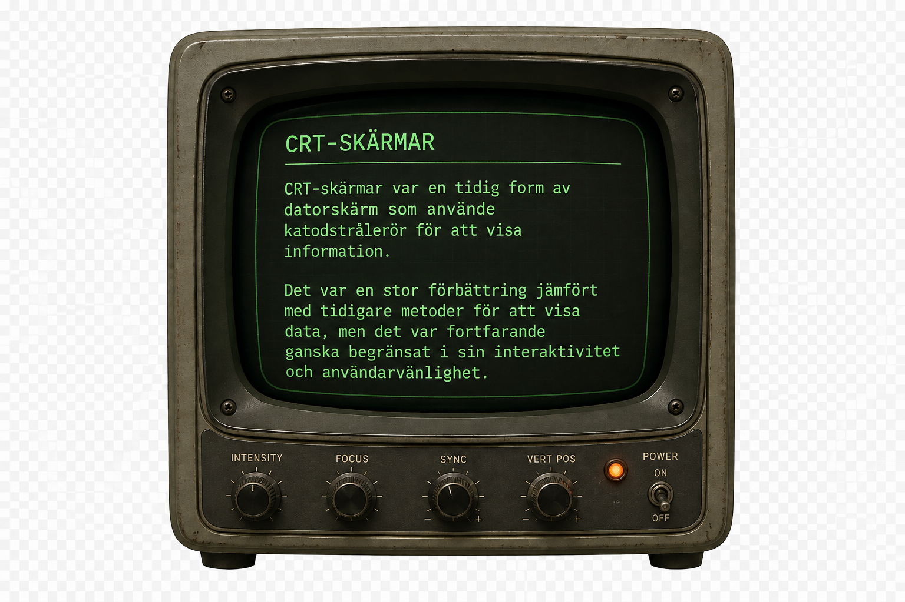
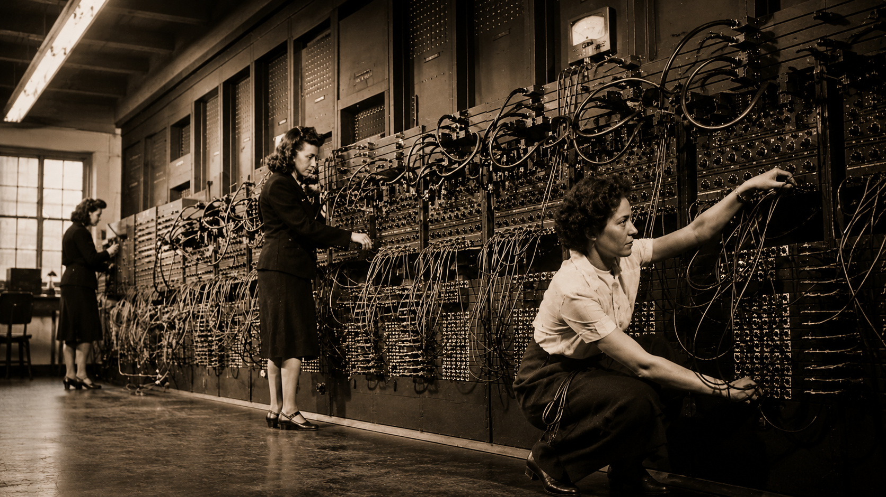
1943-1946
Den första elektroniska datorn. Den upptog ett helt rum. Användaren stod utanför systemet och arbetade genom förberedda instruktioner genom att vrida på reglage och dra kablar på kopplingsbrädor.
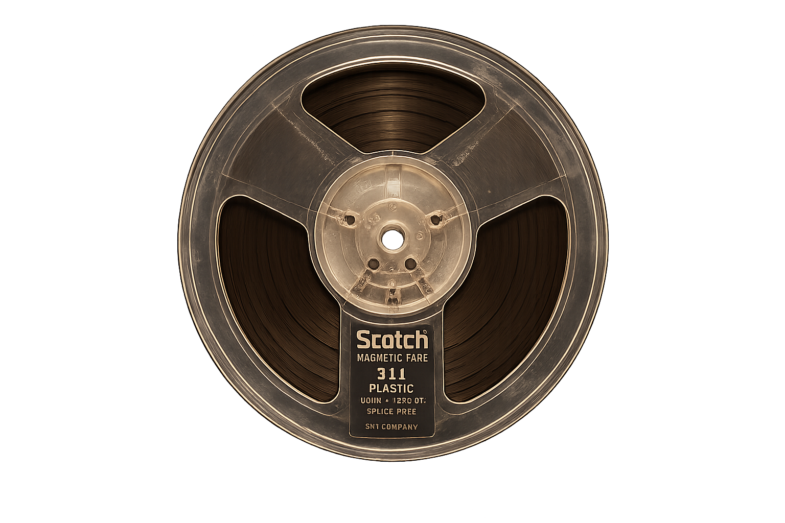
1950-talet
Dessa bestod av en tunn plastfilm med magnetiskt skikt på ena sidan. Data kunde lagras och presenteras som en analog signal i form av ljud eller video. Dessa användes vid säkerhetskopiering av stora datamängder.
Med tangentbord och terminaler kan användare skriva kommandon och få respons i realtid.
Epok 2
≈ 1960–1980
Nätverksartefakt 01
ARPANET räknas som föregångaren till dagens internet. Det visade hur datorer kunde kommunicera över nätverk. Interaktionen flyttade från isolerad maskin till uppkopplad kommunikation.
Klicka på bilden för att se en video om ARPANET.
Källa: Video om ARPANET, YouTube. Inbäddad via YouTubes officiella spelare.
UNIX ≈ 1969
Disketten var den första datortillbehöret som lanserades av IBM och ersatte hålkort och magnetband som lagringsmedium.
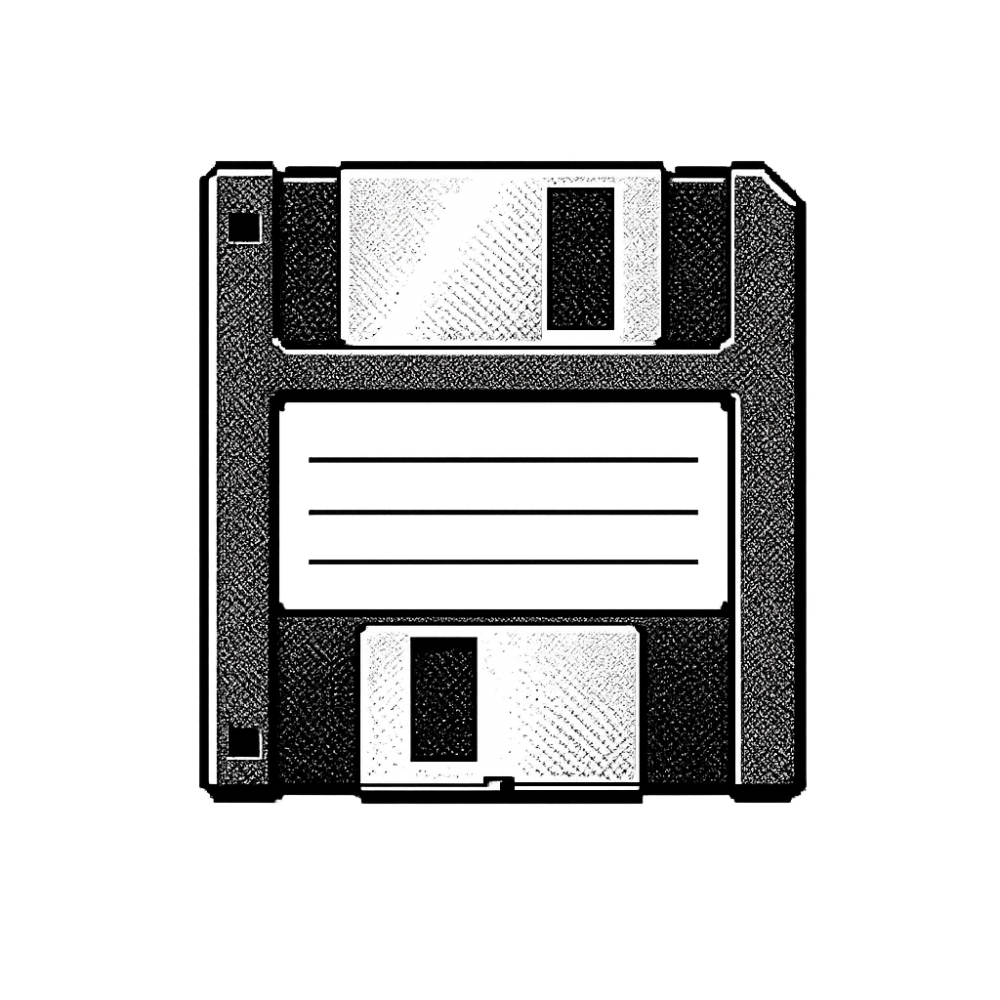
GPS (eng. Global Positioning System) var det första satellitbaserade navigationssystemet som lanserades av USA. De första stegen till bred civil användning av GPS-teknik skedde 1999 när GPS-block godkändes för användning i mobiltelefoner.
PC (eng. Personal Computer) var den första personliga datorn som lanserades av IBM.
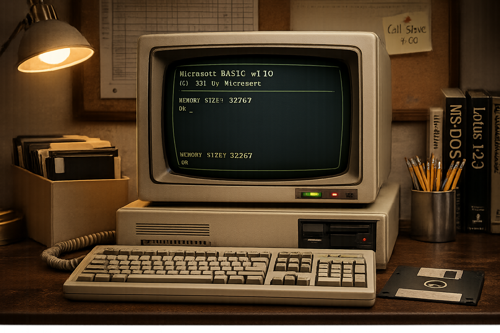
Epok 3
≈ 1980–2000
Datorn blir visuell. Istället för att skriva kommandon kan användaren se, peka, klicka och manipulera objekt direkt.
Apple inkluderade datormusen som standardtillbehör till sina nya datorer.
Fönster, ikoner, menyer och mus gjorde datorn mer visuell och lättare att förstå.
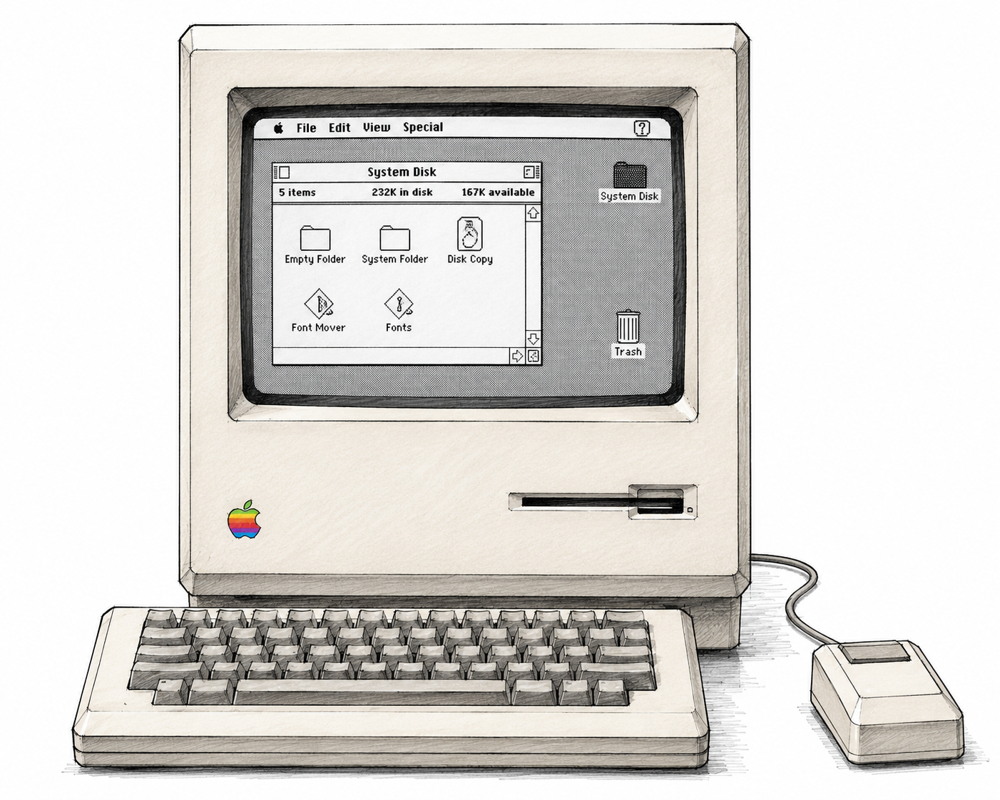
Webben föärändrade människornas vardag. Alltfler började köpa PC för att få tillgång till webben. Den gjorde information klickbar, länkad och tillgänglig genom grafiska webbläsare.
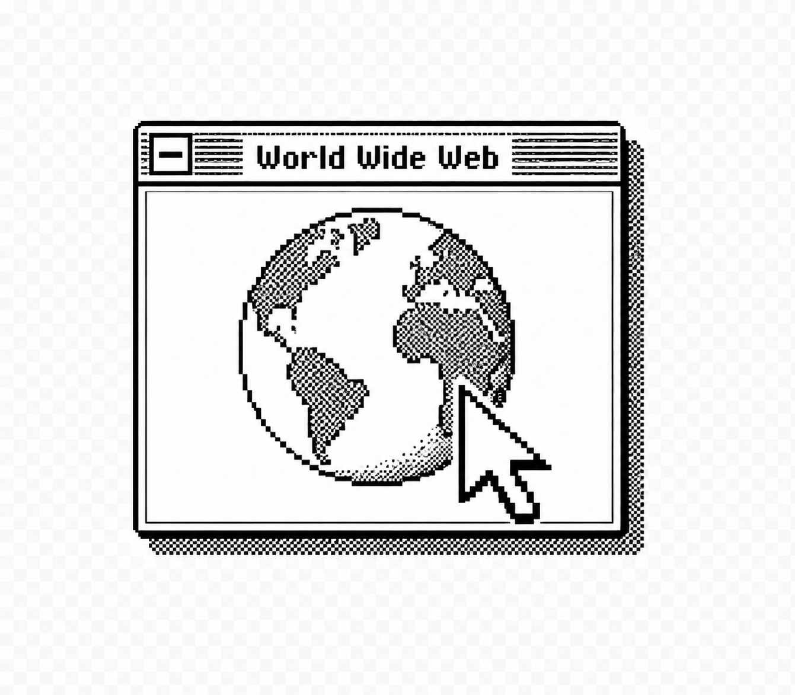
Öppen källkod möjliggjorde för användare att bygga dela och förändra grafiska gränssnitt efter behov och smak.
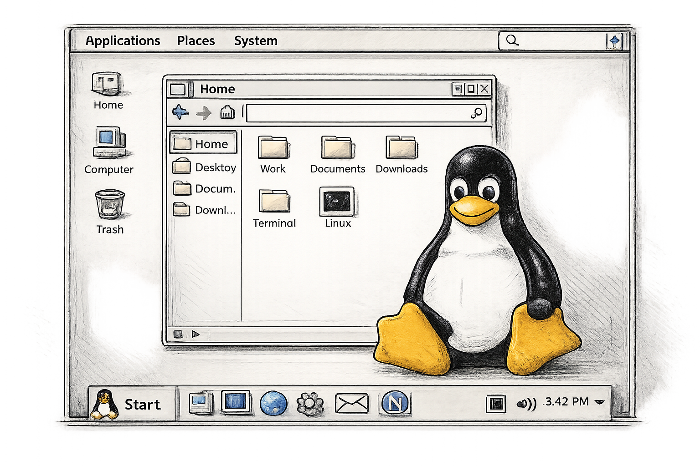
Tillkomst av Start-meny, skrivbord och förinställda program underlättade användningen ytterligare.
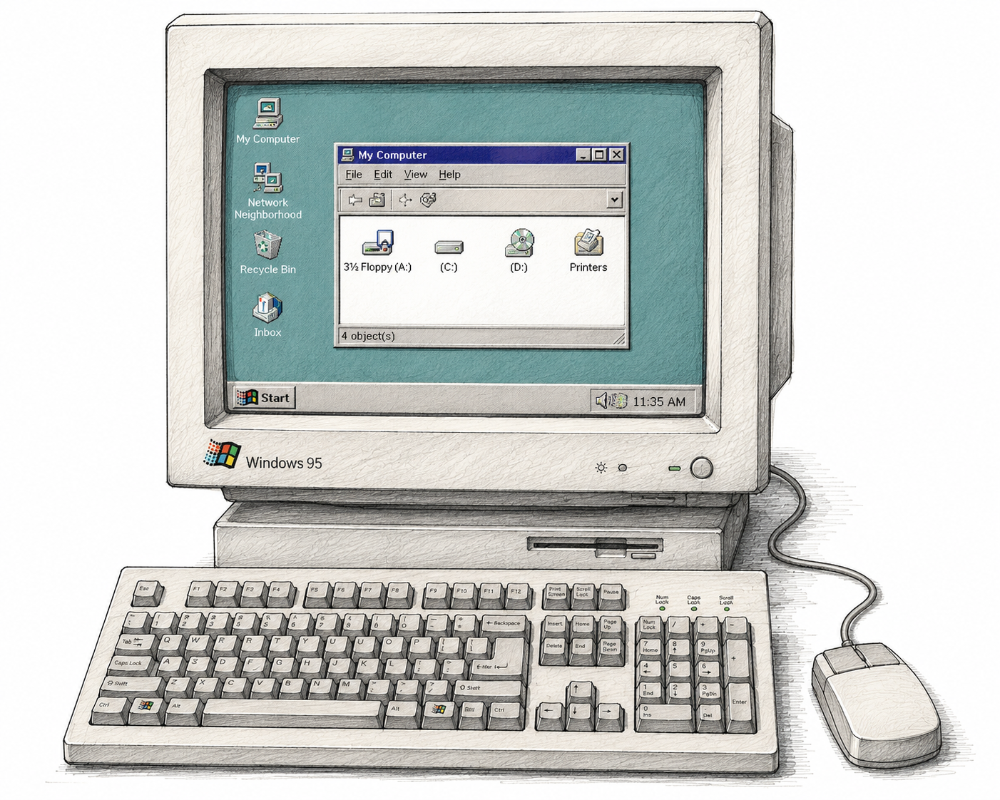
Epok 4
≈ 2004 – nu
Skärmen blir både yta och kontroll. Fingret ersätter muspekaren, och interaktionen känns mer fysisk, direkt och kroppslig.
Gesture 01
Swipe blir ett sätt att bläddra, backa eller navigera.
Swipea höger eller vänster för att bläddra mellan sidor.
2004
Visste du att det var svenska uppfinnare, Thomas Eriksson och Magnus Goertz, som uppfann sveptekniken?
PS: de blev erkända 2022
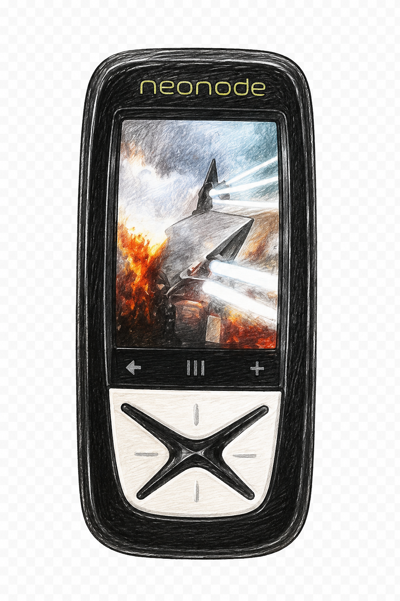
2007
Iphone lanserades och dess multi-touch gjorde mobilen till ett direkt manipulerbart gränssnitt.
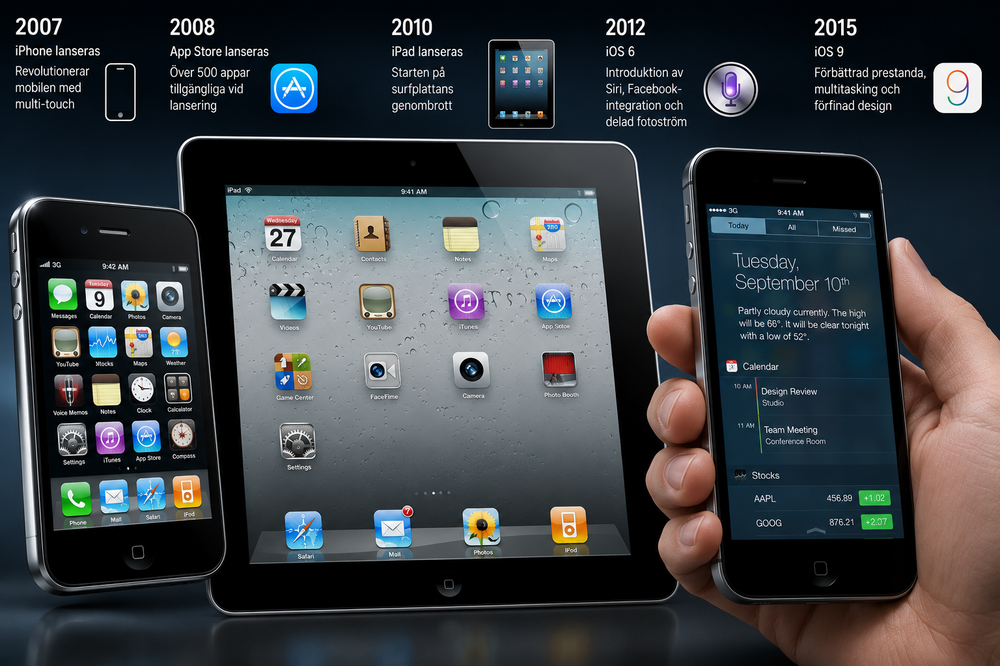
2007
Alltfler människor fick möjlighet att skaffa smartphone och de delades i iPhone vs Android användare.
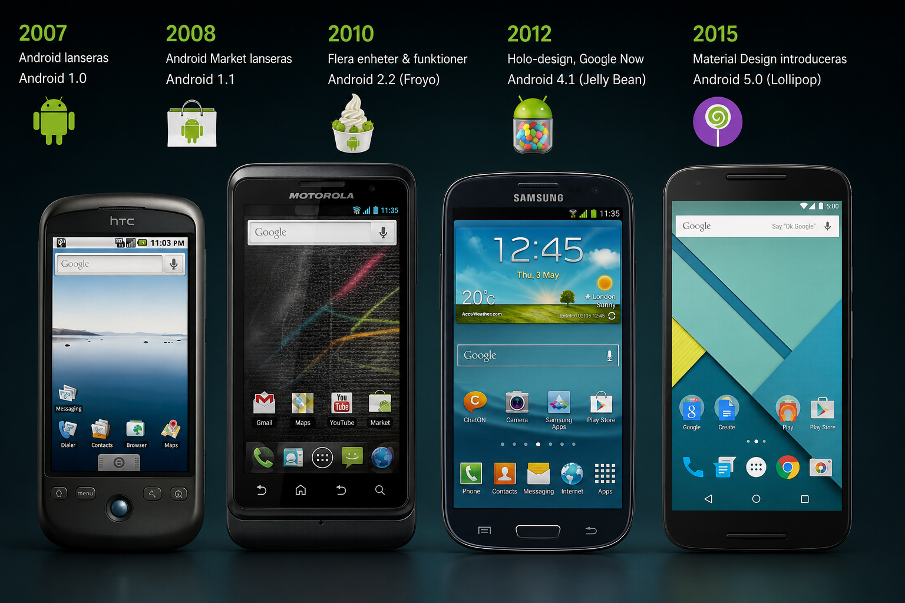
Interaktion 02
Gränssnittet delades upp i små tjänster. Nu designades appar efter syfte och behov Användaren överöstes med alternativ
Sensorer
När regeringen godkände GPS III-programmet år 2010 började GPS tillkomma i alltfler mobiltelefoner. GPS blev tillgänglig för nästan alla mobiltelefonanvändare när den första GPS III-satelliten lanserades 2018.
2010
Så småningom designades olika varumärken plattor. Touch fanns inte enbart på smartphone utan på större enheter som var mer lämpliga för läsning och spelande.
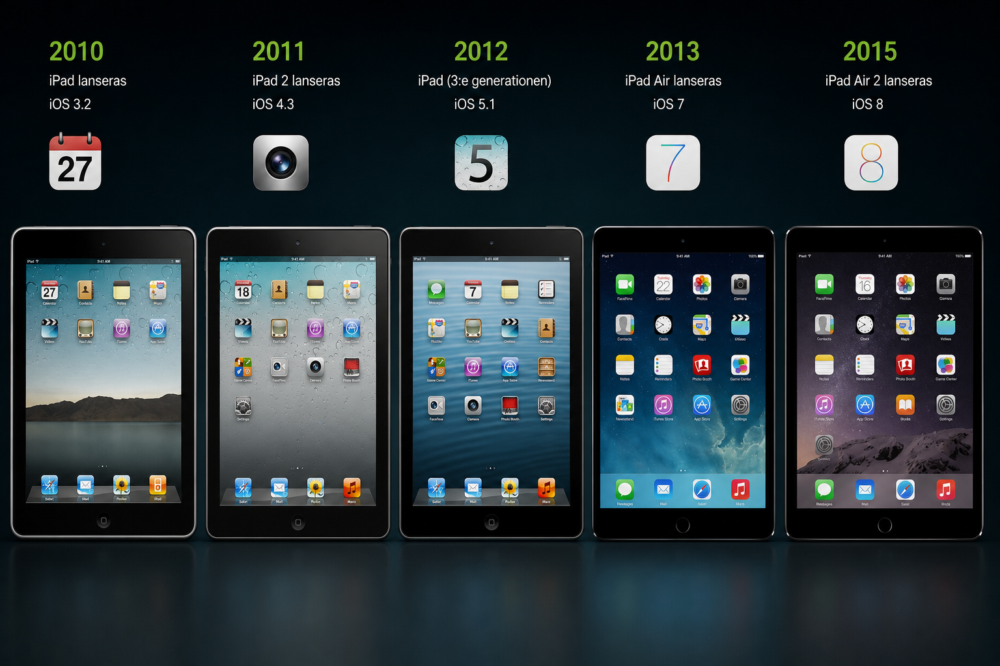
Epok 5
≈ 2011–nu
Interaktionen sker inte längre genom en enda kanal. System tolkar röst, bild, rörelse, blick och kontext samtidigt.
(2011-2014)
Röst blir ett gränssnitt. Användaren behöver inte längre trycka, klicka eller swipa, utan kan tala direkt till systemet.
(2022)
Gränssnitt börjar svara, skapa och föreslå. Interaktionen blir mer dialogbaserad och mindre förutsägbar.
(2023)
Systemet kombinerar flera signaler samtidigt: röst, ansikte, blick, rörelse och bild.
Kosekvens
När systemen känner av mer kan de också påverka mer. Interaktionen blir smartare, men också mer manipulativ.
Outro
När interaktion blir mer naturlig och mer osynlig förändras inte bara verktygen — utan också relationen mellan människa och teknik. Många designers funderar nu på var gränsen går mellan det som är mänskligt och det som är tekniskt, och hur vi kan skapa en mer hållbar och etisk interaktion i framtiden.